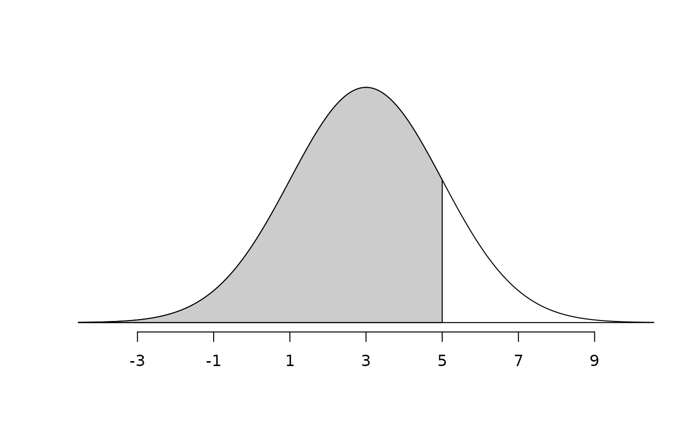
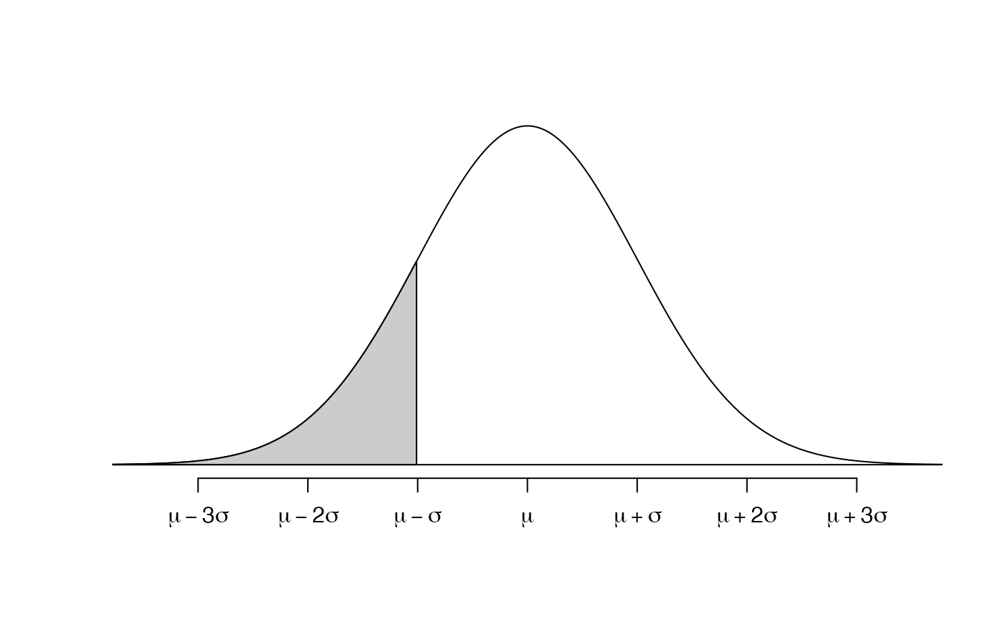
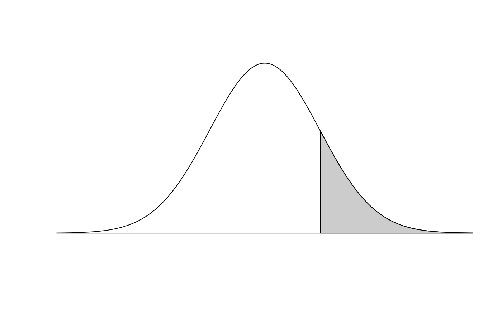
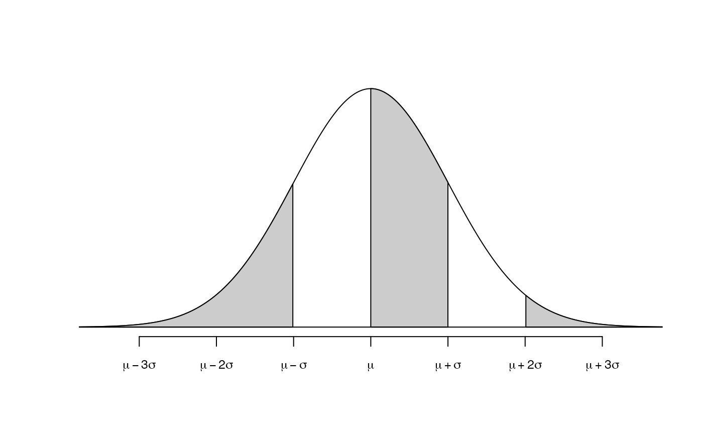

Produce a normal (or t) distribution and shaded tail.
normTail(
m = 0,
s = 1,
L = NULL,
U = NULL,
M = NULL,
df = 1000,
curveColor = 1,
border = 1,
col = "#CCCCCC",
xlim = NULL,
ylim = NULL,
xlab = "",
ylab = "",
digits = 2,
axes = 1,
detail = 999,
xLab = c("number", "symbol"),
cex.axis = 1,
xAxisIncr = 1,
add = FALSE,
...
)Arguments
- m
Numerical value for the distribution mean.
- s
Numerical value for the distribution standard deviation.
- L
Numerical value representing the cutoff for a shaded lower tail.
- U
Numerical value representing the cutoff for a shaded upper tail.
- M
Numerical value representing the cutoff for a shaded central region.
- df
Numerical value describing the degrees of freedom. Default is
1000, which results in a nearly normal distribution. Small values may be useful to emphasize small tails.- curveColor
The color for the distribution curve.
- border
The color for the border of the shaded area.
- col
The color for filling the shaded area.
- xlim
Limits for the x axis.
- ylim
Limits for the y axis.
- xlab
A title for the x axis.
- ylab
A title for the y axis.
- digits
The maximum number of digits past the decimal to use in axes values.
- axes
A numeric value denoting whether to draw both axes (
3), only the vertical axes (2), only the horizontal axes (1, the default), or no axes (0).- detail
A number describing the number of points to use in drawing the normal curve. Smaller values correspond to a less smooth curve but reduced memory usage in the final file.
- xLab
If
"number", then the axis is drawn at the mean, and every standard deviation out until the third standard deviation. If"symbol", then Greek letters are used for standard deviations from three standard deviations from the mean.- cex.axis
Numerical value controlling the size of the axis labels.
- xAxisIncr
A number describing how often axis labels are placed, scaled by standard deviations. This argument is ignored if
xLab = "symbol".- add
Boolean indicating whether to add this normal curve to the existing plot.
- ...
Additional arguments to
plot.
See also
Author
David Diez
Examples
normTail(3, 2, 5)

normTail(3, 2, 1, xLab = 'symbol')

normTail(3, 2, M = 1:2, xLab = 'symbol', cex.axis = 0.8)
normTail(3, 2, U = 5, axes = FALSE)

